Achieving comity: disciplinary border crossings with Guy Aston
Allegiances
And what do
you
do?
This talk
some graphics
some bulleted lists
mostly text
a socio-historical approach
Clever boys/confused students
Holywell Manor, Oxford: May 1967
Preaching in Parma
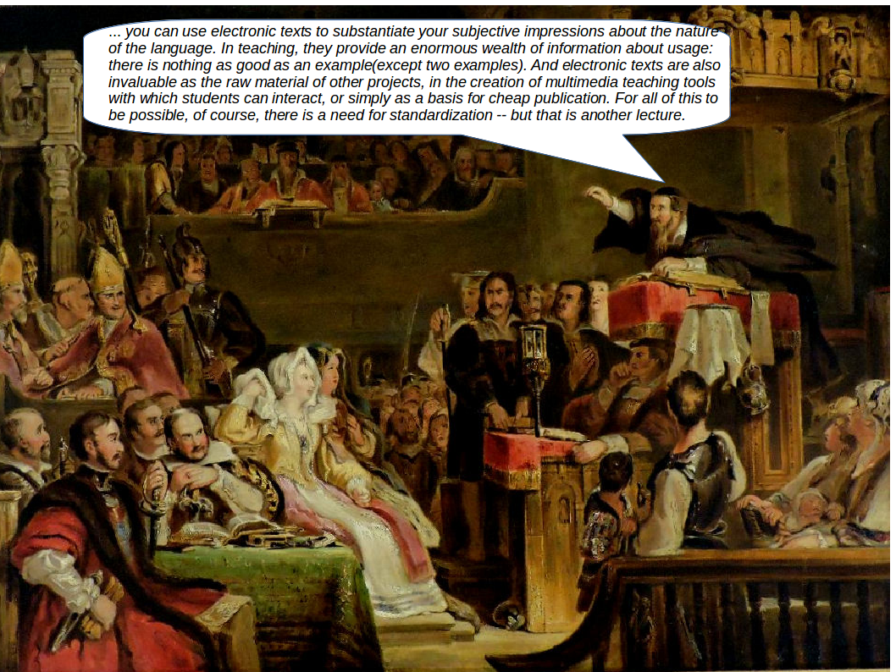
October 1992: Electronic Resources for Textual Studies
... TLAs to pitch for
BNC
TEI
DRH
HCU
etc
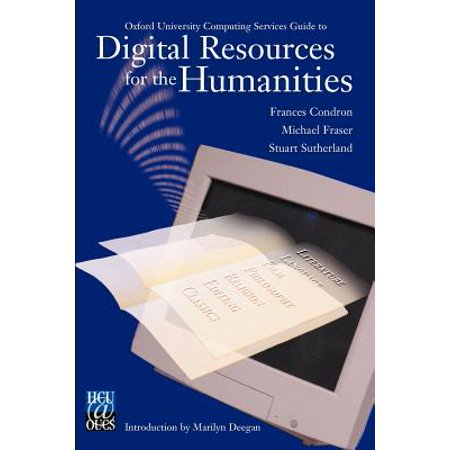
Fame at last
Electronic Buddhist Text Initiative meeting, Haiensa, October 1994
BNC goals
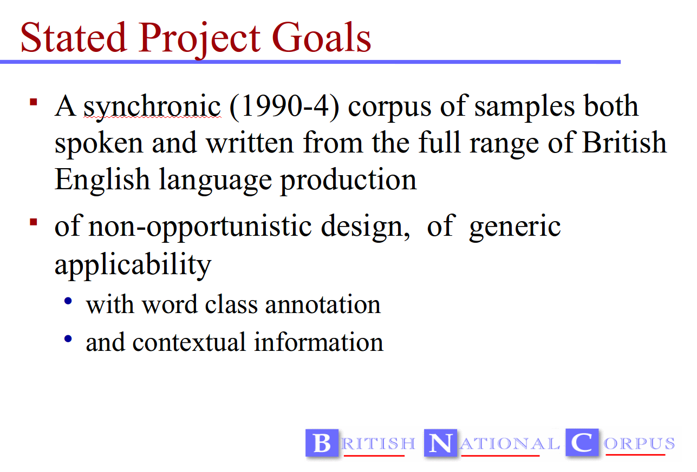
BNC goals
The BNC Handbook in production
Oxford: March 1994
(And yes, it was authored in TEI)
and published!
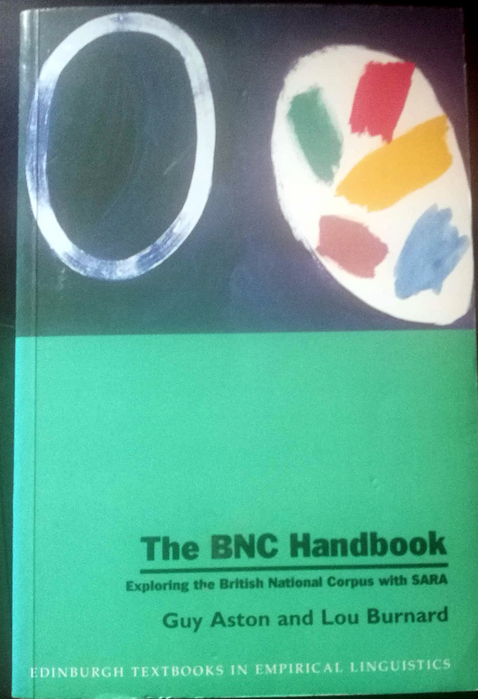
First Forli Workshop, 1997
The survivors
Workshop programme (2004)
The Double Act
The Astonian Method
explore the data: be open to surprise
don't simplify the data
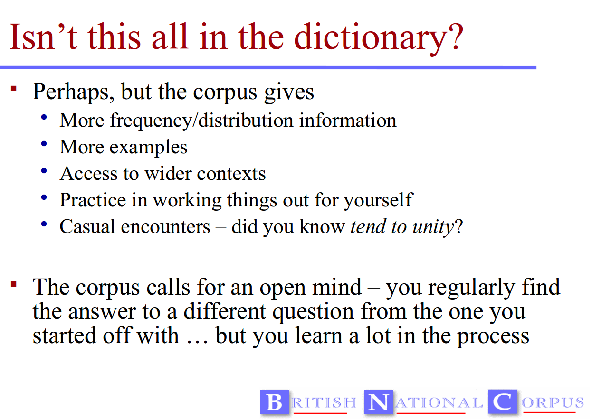
The Astonian Method: first example
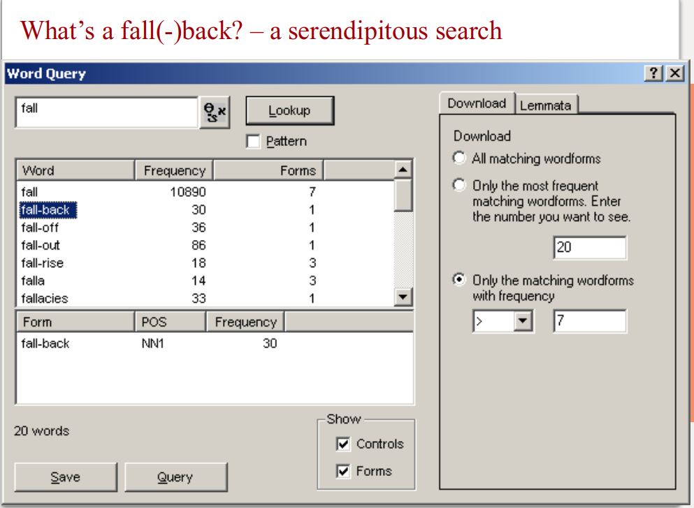
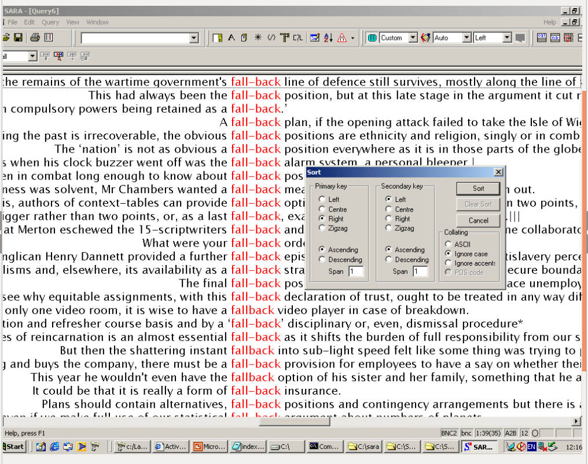
The Astonian Method: serendipitity strikes
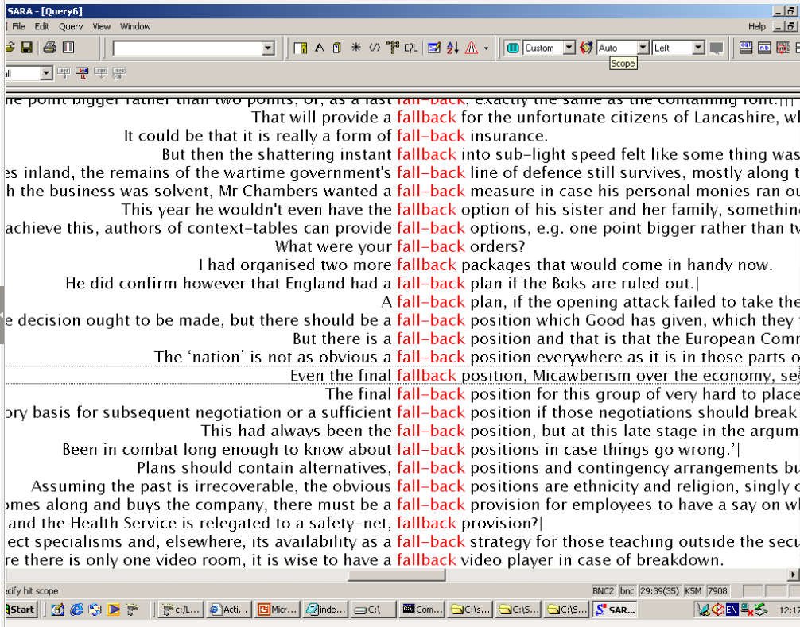
Second example
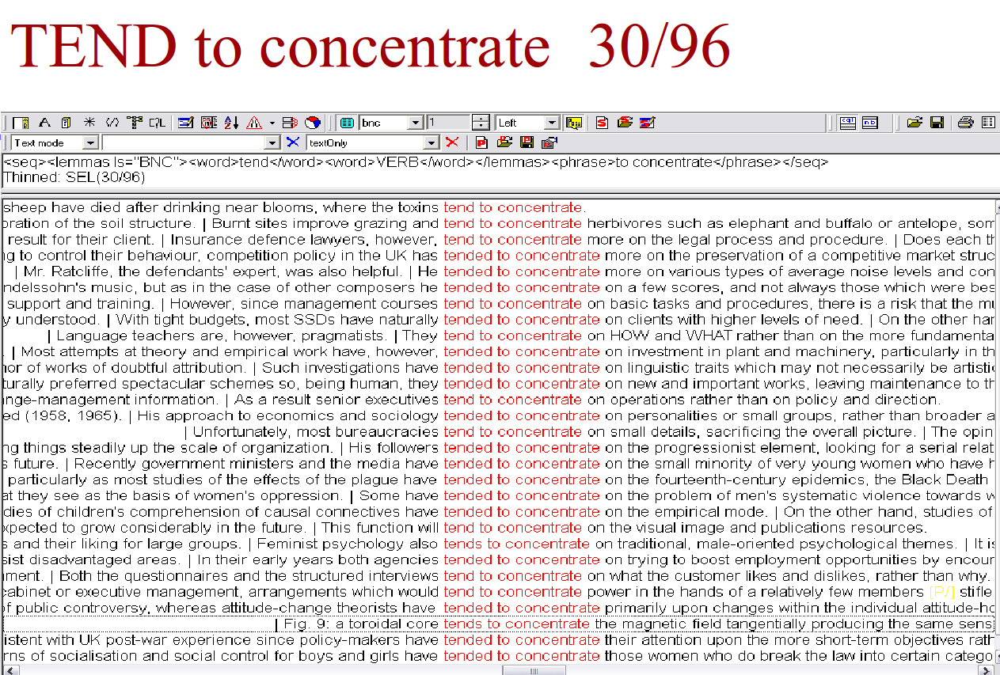
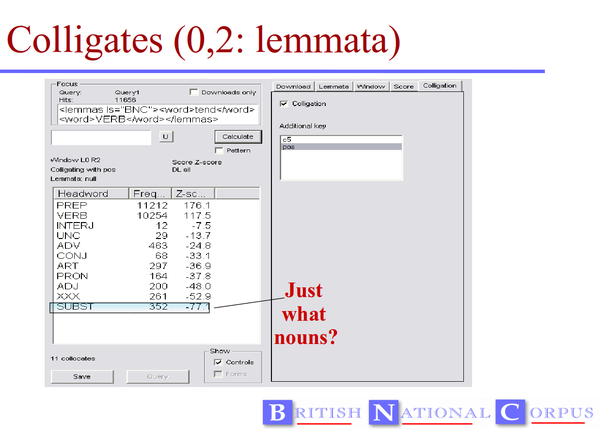
Millenial wanderings
TaLCs
media/talcSummary.pdf
DDL is
still
useful
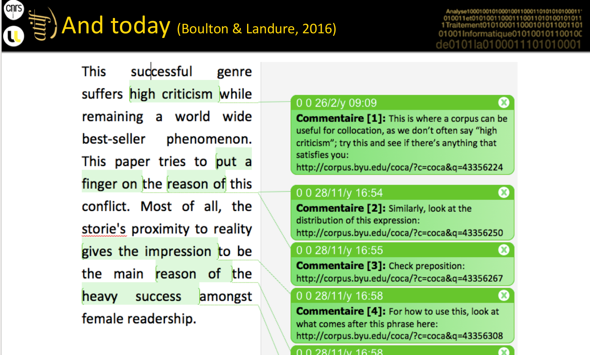
ex auctoritate corpus
.... because it still works
(Boulton, Researching data-driven learning: Past, present, future, TaLC 2018)
Thank you for your attention!